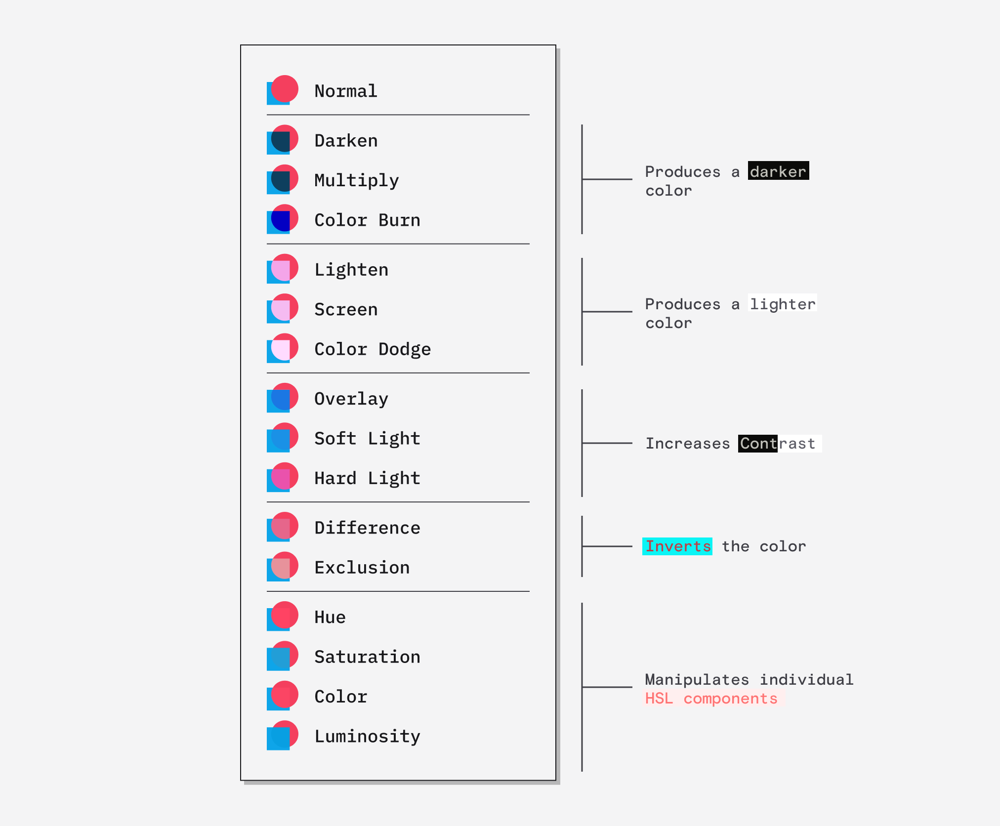

Shape Shifter
Objective
Create a compelling abstract composition that utilizes the fundamentals of balance, shape, and color.
Inspiration
- Gunta Stozel’s wall hanging
- Additional Modernist designs from the preceding Bauhaus Trends page.
Intro to Figma Design Files
For this exercise, we’ll work in a Figma Design file, which offers more tools and capabilities than a FigJam file.
Open our Team workspace and look for the file called “Shape Shifter.” (If you can’t find it use the searchbar.)
Working with Shapes in Figma
Terminology
Layers are any element in your design, such as shapes, text, images, or lines. This might be confusing if you’re coming from Adobe software where Layers are a special organizational tool, but in Figma a Layer is simply any element listed in the lefthand Layers panel.
Frames are a special kind of Layer, that can contain other elements. If you’ve used Photoshop or Illustrator, you can think of these like Artboards — but with special powers. A Frame can have a background! They can also dynamically resize based on their content with auto layout, which we won’t get to just yet.
Practice the following actions:
- Make basic shapes with the Rectangle (R) and Ellipse (O) tools. Try holding Shift to create perfect squares and circles. (With an Ellipse selected, you can drag on the arc point to create pie-wedges or half-circles.)
- Select shapes with the Move tool (V).
- Adjust the scale of shapes with the Scale tool (K). Hold Option/Alt to keep the selected shape centered in its current location.
- Apply and edit the Fill color for selected shapes by clicking in the righthand Design panel.
- Apply and edit the Stroke (border) for a selected shape. You can change the color and width of a stroke or add additional strokes to a shape.
- Duplicate shapes with Copy/Paste — or by holding the Option/Alt key, clicking on a shape, and dragging out a copy. You can hold Shift to constrain the copy’s movement to the X or Y axes.
- Select multiple shapes; you can drag a selection box or hold Shift and click on shapes to add them to the current selection.
- With multiple shapes selected, experiment with the Alignment and Distribute tools in the Design panel.
Blending and booleans
Once you are comfortable creating and editing shapes, let’s see how two shapes can interact with each other.
- Position two shapes so they are partially overlapping. You can adjust which one is in front with the square bracket keys (or by right-clicking).
- Select the shape that is in front and look for the percentage number next to the Fill color — this is opacity, which you can lower to make elements transparent.
- Click on the color swatch for your Fill color to open the color picker, then click the 💧 teardrop icon in the top-right to change the Blending Mode of the color.
Blending modes affect the interaction of two colors. These same options exist in many graphics programs, including Photoshop and the CSS programming language. You can just click through them at random to find one that looks cool, but for a great walkthrough of the different blending modes, see this article by Dan Hollick.

Blending modes illustrated by Dan Hollick.
- Select two overlapping shapes again (or use the same ones as above) and click the Boolean menu at the top-center of the screen — it looks like two squares overlapping.
- Experiment with Boolean operations to merge shapes together or use them like cookie cutters and create new shapes. Note that once you’ve created a Boolean object, you can still adjust the positions of the two base shapes by double-clicking the object! (Press ESC to exit.) To permanently apply a Boolean operation, you can right-click and “Flatten” but this is often not necessary.
Exercise Instructions
In the shared Team workspace, open the File for this exercise. (If needed, you can search by file name.)
Using the tools described above, create an abstract composition inspired by the lecture video and the fundamental concept of balance.
Without making your composition perfectly symmetrical, try to make your artwork visually balanced. Create areas of focus. Contrast areas of high information (detail) and areas of quiet. Include a variety of shapes and colors or limit yourself to a few visual elements to work within a set of constraints.
Do not add images or draw line art. Use only Rectangles, Ellipses, and Polygons (and any new shapes you can create with Boolean operations).
Choosing a Color Palette
With abstract geometric designs, color becomes a dominant element of the design. An upcoming lesson will be devoted entirely to color theory, but here are some guiding thoughts for now:
- Is there a single dominant color family? (e.g., greens or warm colors)
- What is the emotional or psychological tenor of your palette? Do the shapes in your design complement that feeling?
There are many tools for generating color palettes. I like the website Coolors, which can generate random palettes and let you save or customize specific colors. The same site offers an image upload tool, which lets you extract colors from a specific image. This is a great strategy for picking colors, which you can do without an app simply by looking closely. Try extracting color palettes from photographs, paintings, book covers, poster designs, and more.
The color picker in Figma will display recently used colors, but you can also save the color of a selected element to your document Styles to stay really organized. Another handy tool for managing color is the Eyedropper tool (I) which samples colors from anywhere in your file and applies them to the current selection.
Plugins
Figma has a huge library of plugins that you can use in your project. Just select the Plugin dropdown Menu and choose “Find more plugins” or click the Resources icon in the top toolbar and search.
Try searching for “Split” to find the Split Shape plugin, which can instantly divide a shape into columns and/or rows. This is handy if you want a bunch of evenly-sized sections within your design.
Or search for color palette tools, including one to run the Coolors generator right inside Figma or to extract a palette from an image.
Submission
- In the Figma file, select “File » Save to Version History” to ensure your work is saved. You will be prompted to enter a description, so just write “Finished!” or whatever message you like. This action is automatically associated with your username so you don’t need to write your name.
- Export your Frame as a PNG file and submit it to Canvas.
How to export images from Figma
1. Select a Frame.
Make sure to select the Frame itself and not an element within the Frame. Click on the Frame’s name in the central workspace or lefthand Layers panel. Make sure any elements or shapes you want to export are inside the Frame (the Layers panel helps with this).
2. Define Export Settings.
Select the “Export” tab at the bottom of the righthand Design panel. By default it will export a PNG image at the size of your Frame (e.g., if your frame is 1000px x 1000px, that’s what size your exported image will be). That should be fine for most of our assignments, but you may choose JPEG or another filetype based on your needs.
If desired, you can scale your design up or down when exporting. By default the size is “1x” but you could change it to “2x” to get an image that’s twice as big (useful in interface design for retina screens, but not important for us). You can specify an output size in pixels by typing a number with a “w” after it (e.g., “1920w” will export an image that’s 1920px wide).
It’s possible to export the following filetypes:
- Raster Images (Pixel-based)
- PNG: Great for flat vector artwork and text; can include transparency; photos may appear grainy or result in large file sizes.
- JPEG: Great for anything with photos or subtle color shifts; does not support transparency. Read more about JPEG vs. PNG.
- Vector Images
- SVG: An all-purpose vector filetype. It can include embedded photos, but it’s best used for purely vector artwork like icons.
- PDF: Maintains vector paths to ensure high-quality and scalability. Good if printing your work. You can even open a PDF in Adobe Illustrator and manipulate your paths and anchor points.